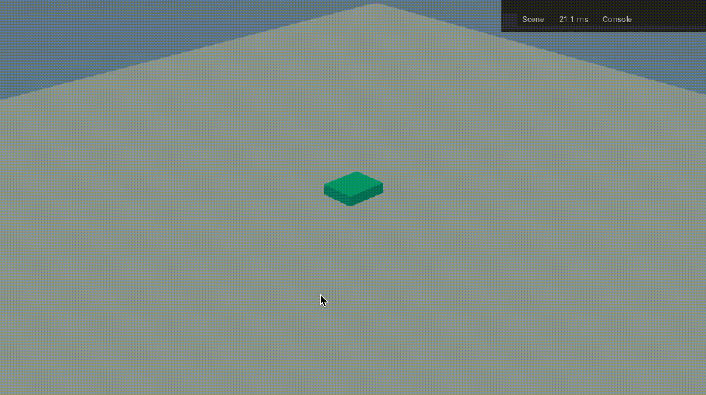

Basics
In Basics part we will establish basics of city buildings, such as placing, moving, etc of buildings with player interaction.
Table of contents:
ARCBALL CAMERA
To view around our scene's environment, we will use arcball camera rotation. Now, arcball rotation is rotation of an object around a point. We will arcball rotate the camera when right mouse button is pressed and hold and use mouse wheel to zoom in and out.
To do so:
- Create an empty
CameraEmptyand position it to center of world and then set parent of our camera to this empty. - Create new haxe trait
CameraControllerand assign it to our camera, we will use this to control behavior of our camera.
CameraController.hx
package arm;
import iron.Scene;
import iron.system.Input;
import iron.math.Vec4;
class CameraController extends iron.Trait {
//Get our CameraEmpty
var cameraEmpty = Scene.active.getEmpty("CameraEmpty").transform;
//Get mouse
var mouse = Input.getMouse();
@prop
var viewMin = 1.0;
@prop
var viewMax = 2.8;
public function new() {
super();
notifyOnUpdate(update);
}
function update() {
if(mouse.down("right")){
// Rotate our empty on z-axis in opposite direction of our mouse-x movement.
// Mouse movement is divided by 200 to slow the rotation.
cameraEmpty.rotate(new Vec4(0, 0, 1), -mouse.movementX / 200);
cameraEmpty.buildMatrix();
cameraEmpty.rotate(object.transform.world.right(), -mouse.movementY / 200);
cameraEmpty.buildMatrix();
}
if (mouse.wheelDelta != 0){
//Add mouse wheel delta to cameraEmpty scale
cameraEmpty.scale.add(new Vec4(mouse.wheelDelta/30, mouse.wheelDelta/30, mouse.wheelDelta/30));
//Clamp the scale
cameraEmpty.scale.clamp(viewMin, viewMax);
cameraEmpty.buildMatrix();
}
}
}
Code Explanation
@prop, is used for variable that need configuration, if you refresh script than you can edit this variable straight from blender.- We get empty's transform and and set it z-axis rotation to reverse of our mouse moment on x-axis and slow it down by 200, and then
buildMatrix(). - We rotate our empty again but on object's right location in world-space and with our mouse's moment on y-axis and again call
buildMatrix(). - If mouse's wheel is moving, than add mouse's wheel delta to cameraEmpty's scale and slow it down by 30, thus adding zoom in and out.
- Clamp the scale between viewMin and viewMax, so that camera can't zoom in and out more.
You should get this:

BUILDINGS
To manage our city, we will need to spawn, move, remove, rotate our buildings.
-
Create a cube
hs(stand for house), we will use this for assets, it will do nothing else of sort. -
Create a plane
bld_1(we will use numbers for types), and makehsas child to this plane, we will use this as base, and for interaction. Set its physics as:- Physics type -> RigidBody
- RigidBody Type -> Passive
- Setting -> Animated
- Collision shape -> Box
- Collision Collection -> 2nd Group
- Collision Filter mask -> 2nd Group
-
Set plane (ground) physics as:
- Physics type -> RigidBody
- RigidBody Type -> Passive
- Collision shape -> Box
Collision filter mask will make ray-cast ignore the object.
- Create new Haxe trait
BuildingControllerand assign it to scene.
SELECTING AND UNSELECTING
We will interact with our building by selecting, unselecting building. To do so, We will physics ray-cast to group 2(groups of buildings) and check if it hit any of our building, if it do than set selected building to this.
BuildingController.hx
import armory.trait.physics.PhysicsWorld;
import iron.Scene;
import iron.math.Vec4;
import iron.math.RayCaster;
import iron.system.Input;
//Define structure of building
typedef Building = {
name: String,
type: Int
}
class BuildingController extends iron.Trait {
//Declare selectedBuilding, i.e., name of building currently selected.
public static var selectedBuilding:Building = null;
//Whether any building is selected or not
public static var isBuildingSelected = false;
public function new() {
super();
}
public static function raySelectBuilding() {
//Get rigid body from raycast from group 2.
var rigidbody = getRaycast(2).rigidbody;
//Check if rigidbody isn't null and rigidbody's name start with "bld"
if(rigidbody != null && StringTools.startsWith(rigidbody.object.name, "bld")){
//Set selected building to hit rigidbody name
selectedBuilding = getBuildingFromString(rigidbody.object.name);
isBuildingSelected = true;
}else {
selectedBuilding = null;
isBuildingSelected = false;
}
}
static function getRaycast(group:Int){
var physics = PhysicsWorld.active;
var mouse = Input.getMouse();
var start = new Vec4();
var end = new Vec4();
var camera = Scene.active.getCamera("Camera");
// Get Ray-cast direction from start to end with mouse's x, y and camera
RayCaster.getDirection(start, end, mouse.x, mouse.y, camera);
// cast ray from camera's location in world space to end vec and get hit result.
var hit = physics.rayCast(camera.transform.world.getLoc(), end, group);
var rigidbody = (hit != null) ? hit.rb : null;
//wrap rigidbody and hit result and return it.
return{
rigidbody: rigidbody,
hit: hit
};
}
static function getBuildingFromString(name: String):Building {
var building:Building = null;
for(i in buildings){
if (i.name == name) building = i;
}
return building;
}
}
Code Explanation
-
We define data structure of our building, that is its name and it type, with this it will be a lot easier to manage buildings(add, remove, etc).
-
We create
getBuildingFromString(*name*), we loop through all building and check if name match building's name, if so, return the building object. -
We create
getRaycast(*group*)specially, as we don't want to repeat this function during selecting and moving of building. This will ray-cast for specific group from camera to mouse's x/y location in world space, and get hit and rigidbody. -
We create
raySelectBuilding(), which will be use to ofc selected building, we will do so why using our getRaycast() and get rigidbody of hit object, if this rigidbody's name start with 'bld' then set selectedBuilding to this rigidbody name and set isBuildingSelected to true else, null and false.
MOVING
We will want to move building across ground to be able to place it wherever we like. For doing that, we will physics ray-cast to group 1 and check if it hit plane, if it do than update building position to ray's hit location every frame.
BuildingController.hx
~
typedef Building = { ~ }
class BuildingController extends iron.Trait {
~
//Should building move
public static var buildingMove = false;
public static function new() { ~ }
public static function raySelectBuilding() { ~ }
public static function moveBuilding() {
var raycast = getRaycast(1);
if(raycast.rigidbody != null && raycast.rigidbody.object.name == "Ground") {
//Set loc of selected building as floor of ray hit position's x, y and z as 0.4.
Scene.active.getChild(selectedBuilding.name).transform.loc.set(Math.floor(raycast.hit.pos.x), Math.floor(raycast.hit.pos.y), 0.2);
}
}
static function getRaycast(group:Int){ ~ }
static function getBuildingFromString(name: String):Building { ~ }
}
Code Explanation
- We then create
moveBuilding(), to drag building around, we can do so, by ray-casting(getRaycast()) and get hit location and update building location each frame, we will floor the hit location for grid-snapping effect and set building's z-axis location to 0 as we don't want building to be higher or lower.
PLACING AND REMOVING
To be able to place building, we will first unselect any selected building, spawn new building and set selected building to new spawned one. To place it we will simply unselect our selected building. To remove building, we will select the building, than remove the building and then unselect building.
BuildingController.hx
import iron.object.Object;
~
typedef Building = { ~ }
class BuildingController extends iron.Trait {
~
//Declare arrays of buildings
public static var buildings: Array<Building> = [];
//Building's Id, eg: bld_hs1, bld_pw2, etc.
public static var buildingId = 0;
public function new() { ~ }
public static function raySelectBuilding() { ~ }
public static function moveBuilding() { ~ }
public static function selectBuilding(name: String) {
selectedBuilding = getBuildingFromString(name);
isBuildingSelected = true;
buildingMove = true;
}
public static function unselectBuilding() {
selectedBuilding = null;
isBuildingSelected = false;
buildingMove = false;
}
public static function spawnBuilding(type: Int) {
unselectBuilding();
//Spawn object with name = "bld_"+type
Scene.active.spawnObject("bld_"+type, null, function(bld: Object){
//Increment buildingID
buildingId++;
//Change name
bld.name = "bld_"+type+"_"+buildingId;
//Add new building to add with name and type
buildings.push({
name: "bld_"+type+"_"+buildingId,
type: type
});
selectBuilding(bld.name);
});
}
public static function removeBuilding() {
//Remove Selected building
Scene.active.getChild(selectedBuilding.name).remove();
//Remove selected building from buildings array
removefromArray(selectedBuilding.name, buildings);
//Unselect building
unselectBuilding();
}
static function getRaycast(group:Int){ ~ }
static function getBuildingFromString(name: String):Building { ~ }
static function removefromArray(name: String, buildings: Array<Building>){
//Define building and set it to null
var building:Building = null;
//loop through buildings array
for (i in buildings){
//if building's name match, with name parameter
if (i.name == name){
//Set above declared building to this
building = i;
}
}
//Get index of building in buildings array
var index = buildings.indexOf(building);
//If it exist(doesn't exist = -1)
if (index > -1){
//remove building from array from index and length
buildings.splice(index, 1);
}
}
}
Code Explanation
-
We creates
selectBuilding(*name*)and we do so by setting selectedBuilding to name, isBuildingSelected to true, and buildingMove to true. -
We creates
unselectBuilding()and we do so by setting selectedBuilding, isBuildingSelected to null, false respectively. -
We will now spawn building with
spawnBuilding(*type*), we will first spawn object and when it is spawned, we will increment buildingId, set it name to "bld_"+its type+ its buildingId, pushes this building to our buildings array and unselect any selected building and select this spawned building. -
We will create a utility function
removefromArray(*name*, *buildings*)to remove selectedBuilding from buildings array. we will loop through buildings array check if name matches, if it do then get index of this building in buildings array and then remove it with splice. -
Now to remove building, we will create
removeBuilding(), with it we will remove building object from game and then remove it from out buildings array and finally unselect building.
ROTATING AND ON-CONTACT
We will get contact between buildings to avoid putting them inside of each other. And also add rotation, because buildings can faced any side!.
BuildingController.hx
import armory.trait.physics.RigidBody;
~
typedef Building = { ~ }
class BuildingController extends iron.Trait {
~
//Is building in any contact
public static var buildingInContact = false;
public static function new() { ~ }
public static function raySelectBuilding() { ~ }
public static function moveBuilding() { ~ }
public static function selectBuilding(name: String) { ~ }
public static function unselectBuilding() { ~ }
public static function spawnBuilding(type: String) { ~ }
public static function removeBuilding() { ~ }
public static function buildingContact() {
var physics = PhysicsWorld.active;
//Get contact of selected building
var contact = physics.getContacts(Scene.active.getChild(selectedBuilding.name).getTrait(RigidBody));
if (contact != null){
buildingInContact = true;
}else{
buildingInContact = false;
}
}
public static function rotateBuilding() {
Scene.active.getChild(selectedBuilding.name).transform.rotate(Vec4.zAxis(), 1.57);
}
static function getRaycast(group:Int){ ~ }
static function getBuildingFromString(name: String):Building { ~ }
static function removefromArray(name: String, buildings: Array<Buildings>){ ~ }
}
Code Explanation
-
To get contact of our buildings with any object that is rigidbody, we do so by creating
buildingContact(), we get physics object that is in contact with our building's rigidbody, if there is any rigidbody contacting with our building, set buildingInContact to true, else false. -
For last feature i.e. rotating, we will create
rotateBuilding(), and rotate the building on z-axis by 1.57 in radians(90 degrees) every time this function is called.
PLAYER
HANDLING BUILDINGS CONTROLLER
We will need to let player control the buildings, such as moving, removing, etc.
- Create new Haxe trait
PlayerController, we will use it as player interaction with game.
PlayerController.hx
import iron.system.Input;
//Import previously made BuildingController
import arm.BuildingController;
class PlayerController extends iron.Trait {
var mouse = Input.getMouse();
var kb = Input.getKeyboard();
var building = BuildingController;
var buildingType: Int = 1;
public function new() {
super();
notifyOnUpdate(update);
}
function update() {
if(!building.isBuildingSelected){
if (mouse.started()){ //mouse.started() defaults to "left" if no button is provided.
building.raySelectBuilding();
}
if (kb.started("p")){
building.spawnBuilding(buildingType);
}
}else{
if (mouse.started("right")) {
if (!building.buildingInContact){
building.unselectBuilding();
}
}
if (kb.started("m")){
building.buildingMove = true;
}else if (kb.started("f")){
building.removeBuilding();
}else if (kb.started("r")){
building.rotateBuilding();
}
}
if (building.buildingMove) {
building.moveBuilding();
building.buildingContact();
}
if (kb.started("1")) buildingType = 1;
else if (kb.started("2")) buildingType = 2;
else if (kb.started("3")) buildingType = 3;
else if (kb.started("4")) buildingType = 4;
else if (kb.started("5")) buildingType = 5;
else if (kb.started("6")) buildingType = 6;
else if (kb.started("7")) buildingType = 7;
else if (kb.started("8")) buildingType = 8;
}
}
Code explanation
-
First we initialize some variables.
-
Call update function every frame.
-
Check if any building isn't selected, if not, then press left mouse button to select building and press
pto spawn buildings. else if any building is selected, continuously check its contacts, if right mouse button is pressed than check if it is in any contact, if not then unselect building. If key buttonm,f,ris pressed, then move, remove, rotate building respectively. -
Use number key button to select building type.
Putting it all together you should get:

Now try creating more building such as gardens, parks, sawmills, etc and apply same physics as bld_hs, and replace cube buildings, with your own assets.
🎉There we go! CBS's Basic part is over!🎉
If you have any problem then you can check the source code at CBST-A3D
W.I.P.